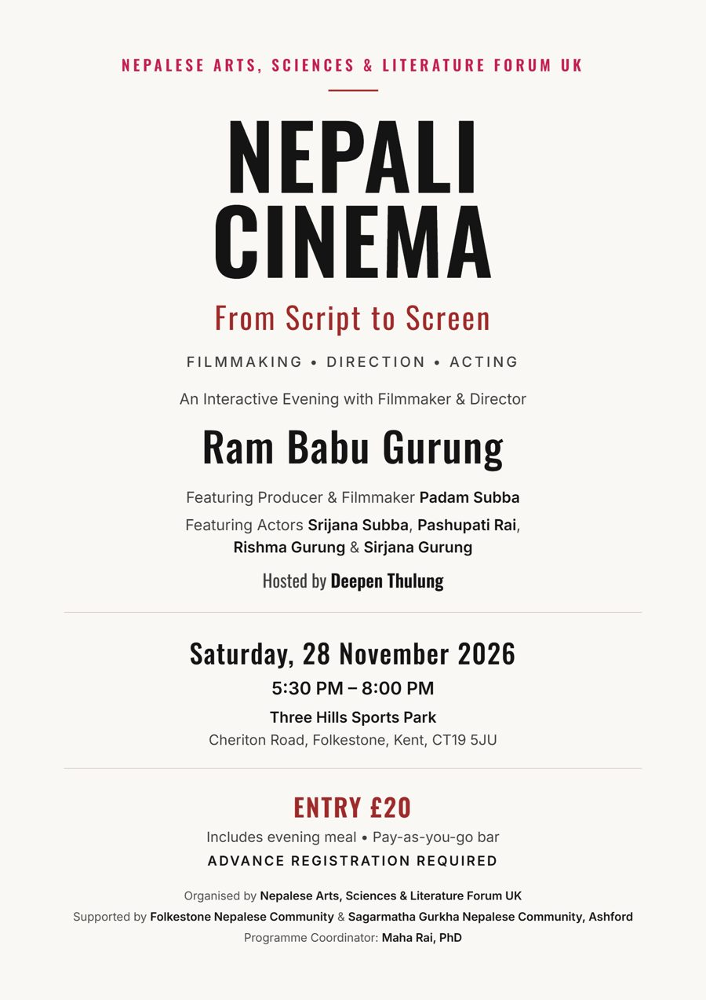

Filmmaking · Direction · Acting
An interactive evening with filmmaker and director Ram Babu Gurung, exploring how a Nepali film goes from an idea on paper to the big screen.
Organised by Nepalese Arts, Science & Literature Forum UK
Supported by Folkestone Nepalese Community & Sagarmatha Gurkha Nepalese Community, Ashford
Programme Coordinator: Maha Rai, PhD
